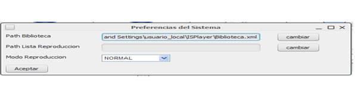

Manual ISPlayer v0.3
|
|
|---|---|
|
9. PREFERENCIAS DEL SISTEMA
El reproductor ISPlayer v0.3 también posee la posibilidad de cargar una biblioteca y/o lista de reproducción por defecto al iniciarse la aplicación, así también como el modo de reproducción, y el tema de la interfaz. Para ello: Archivo->Preferencias, y se abrirá el siguiente panel:  Donde, Path Biblioteca es la ruta de la biblioteca que queremos cargar. Para seleccionar otra biblioteca, pinchamos en cambiar, y seleccionamos el archivo .xml que deseamos. Path Lista Reproducción es la ruta de la lista de reproducción que queremos cargar. Para seleccionar otra lista de reproducción, pinchamos en cambiar, y seleccionamos el archivo .xml que deseamos. Modo de reproducción, también podemos guardar el estado del modo de reproducción, podemos elegir de entre las 4 posibilidades: Normal, Repetir uno, Repetir todas, Aleatorio. |
|
| Ir arriba | |